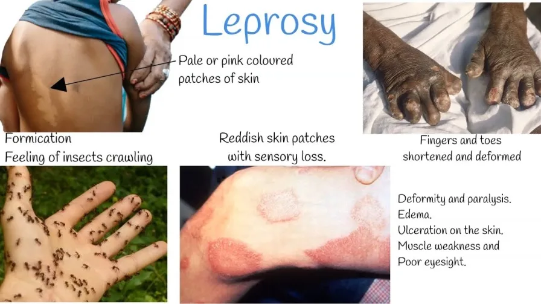

Expanded Nursing Uganda Explanation
Leprosy should be reviewed through safe maternal and newborn assessment, early recognition of danger signs, respectful communication and timely referral. Connect the definition to vital signs, bleeding, fetal or newborn wellbeing, patient education and local protocol requirements.
Contents — 13 sections (tap to expand)
01 Leprosy
It primarily affects the skin and peripheral nerves.
02 Cause of Leprosy
Leprosy is caused by Mycobacterium leprae and Mycobacterium lepromatosis. M. lepromatosis is a relatively newly identified mycobacterium isolated from a fatal case of diffuse lepromatous leprosy in 2008.
03 Transmission of Leprosy
- Nasal route via secretions
- Transplacental and breast feeding
- Genetic predisposition
04 Types of Leprosy:
- Lepromatous leprosy (90%) : This is the most common type of leprosy, accounting for about 90% of cases. It is characterized by widespread skin lesions and a weak cellular immune response. The bacteria multiply profusely in the body, leading to severe skin and nerve damage.
- Tuberculoid leprosy : In this type, the immune response is stronger, and the skin lesions are few and well-defined. The affected areas may have a loss of sensation, but nerve damage is less severe compared to lepromatous leprosy.
- Borderline leprosy: Borderline leprosy lies in between lepromatous and tuberculoid leprosy in terms of immune response and clinical features. It displays mixed characteristics, with moderate skin lesions and nerve involvement.
- Undeterminate (Dismorphoid or Undetermined) leprosy : This type is diagnosed when the symptoms and immune response are not well-defined, making it difficult to classify precisely. It often occurs early in the disease’s progression and may eventually develop into one of the other types.
Differences between Tuberculoid, Lepromatous and Borderline leprosy
- Cutaneous lesion Tuberculoid Lepromatous Borderline
- Characteristic number of lesions Few Many Many
- Size of lesion Large Small Both – large & small
- Symmetry of lesions Asymmetrical Symmetrical Symmetrical
- Surface of lesions Rough and scaly Smooth Rough & scaly
- Edges Sharp Vague Sharp
05 Incubation Period:
The incubation period of leprosy refers to the time between when a person is exposed to the bacteria Mycobacterium leprae and the onset of symptoms. In leprosy, this period usually lasts from 2 to 5 years. However, in certain cases, especially in lepromatous leprosy, the incubation period may extend to a longer duration, lasting 8 to 12 years before signs of the disease become apparent.
06 Signs and Symptoms:
Leprosy presents with a variety of signs and symptoms, which may vary depending on the type and stage of the disease. Some common manifestations include:
- Anaesthetic skin lesions: These are patches of skin that lose their ability to feel sensation. Individuals may not be able to detect pain, heat, or touch in these areas, making them prone to injuries.
- Thickened peripheral nerves : Leprosy can affect the peripheral nerves, leading to their thickening and enlargement, often seen as lumps under the skin.
- Nasal stuffiness : In some cases, leprosy can cause inflammation and swelling in the nasal passages, leading to nasal stuffiness and congestion.
- Saddled nose (Saddle nose) : This refers to the collapse of the nasal bridge due to the destruction of the nasal septum, which can occur in advanced cases of leprosy.
- Loss of eyebrows and lashes : Leprosy can cause the loss of eyebrows and eyelashes, leading to changes in facial appearance.
- Erythema nodosum: This is a condition characterized by painful, red nodules that can occur on the skin or under the skin’s surface.
- Inflammatory eye changes: Leprosy may affect the eyes, leading to various eye problems, including inflammation and potential vision impairment.
07 Investigations
To diagnose leprosy and confirm the presence of Mycobacterium leprae, healthcare professionals may conduct several investigations, such as:
- Histamine test: This test helps assess the level of nerve damage by evaluating the body’s response to histamine injection.
- Lepromine test : Lepromine is a substance derived from the leprosy bacteria. The test measures the immune response to lepromine to determine the type of leprosy and the individual’s immune status.
- Polymerase Chain Reaction (PCR) : PCR is a molecular technique used to detect the genetic material of the bacteria in skin samples, aiding in early and accurate diagnosis.
- Skin snip for Mycobacterium leprae (modified ZN) : A small sample of skin is taken and stained using the modified Ziehl-Neelsen method to visualize the presence of Mycobacterium leprae under a microscope.
08 Treatment for Leprosy:
- Tuberculoid leprosy: Dapsone + Rifampicin
- Lepromatous leprosy: Dapsone + Rifampicin + Clofazimine
- Borderline leprosy: Dapsone
- Steroids
- Vitamin B complex
Drugs for leprosy are commonly administered in fixed drug combinations known as MDT (Multi-Drug Therapy). MDT has been a highly effective approach in treating leprosy and preventing the development of drug resistance.
09 Complications of leprosy include:
- Madorosis (loss of eyebrows and eyelashes)
- Nasal bridge collapse
- Ocular complications: corneal ulcer, blindness
- Leonine faces (thickened, lion-like appearance of facial skin)
- Loss of sensation to heat, pain, and light touch
- Multiple ulcerations due to nerve damage and loss of sensation
- Nerve enlargement
- Orchitis (inflammation of the testicles)
- Disuse of some parts of the body
- Contractures and shortening of phalanges, especially the 4th and 5th fingers and toes
- Elongated soft ear lobes
- Sterility in men secondary to orchitis
- Hammer toes (abnormal bending of the toes)
- Reactional states secondary to successful drug therapy (erythema nodosum leprosum).
10 Nursing Uganda Clinical Lens
Use Leprosy as a practical nursing topic, not only a memorized definition. Study medicines through indication, safety checks, expected response, adverse effects and patient teaching.
- What to understand first: define leprosy, identify the normal or expected pattern, then explain what changes when the patient is unwell.
- Why it matters in care: the nurse must recognize risk early, explain findings clearly, document accurately and know when to escalate.
- How to revise it: connect each point to assessment, nursing diagnosis or care problem, intervention, rationale and evaluation.
11 Assessment Guide
- Diagnosis or reason for the medicine, allergies, pregnancy status and previous reactions.
- Current medicines, herbal products, renal or liver risk and baseline observations.
- Dose, route, timing, dilution, expiry date and documentation requirements.
12 Nursing Priorities, Rationales and Outcomes
- Apply the rights of medication administration and facility policy.
- Monitor therapeutic response and class-specific adverse effects.
- Educate the patient on purpose, timing, missed doses, warning symptoms and adherence.
The rationale for these priorities is patient safety: nursing actions should prevent deterioration, reduce discomfort, support recovery and create clear evidence for the next caregiver.
- Expected outcome: The medicine produces the intended effect without preventable harm, and administration is accurately documented.
13 Patient Teaching and Revision Check
- Explain leprosy in simple language the patient or caregiver can repeat back.
- Teach warning signs, medicine or follow-up instructions, hygiene or lifestyle points where relevant.
- For exams, prepare a short answer using: definition, causes or risk factors, signs, assessment, management, complications and prevention.
- For ward practice, document baseline findings, actions taken, patient response and the plan for review.
Illustrations and Diagrams (1)

Related Video Lectures
Watch nursing lecture videos on YouTube for this topic. Opens in a new tab.
Watch on YouTubeExternal link: YouTube may use its own cookies and terms. Nursing Uganda is not affiliated with YouTube.